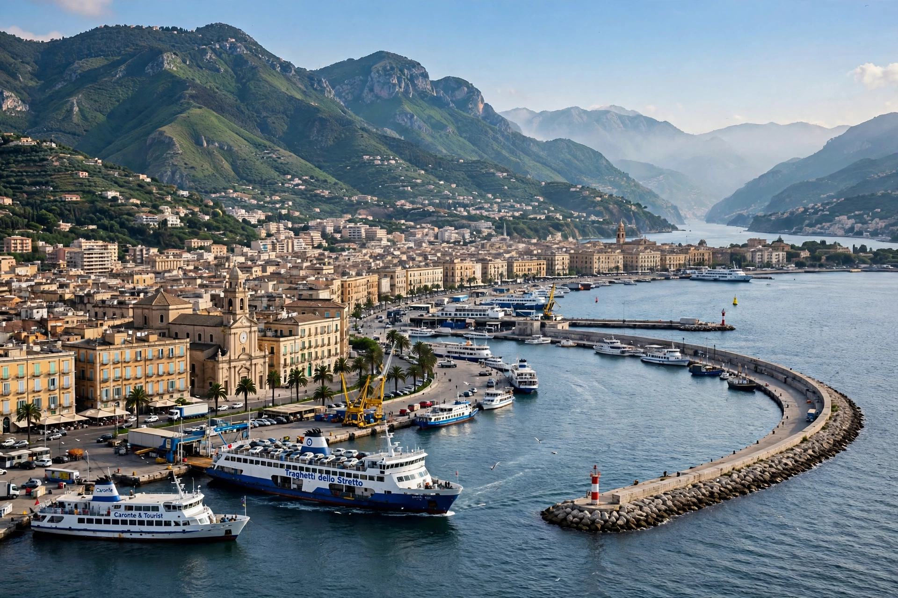

| Country | Italy |
|---|---|
| Region | Sicily |
| Founded | 8th century BCE (as Zancle, by Greek settlers) |
| Population | About 220,000 (municipality) |
| Known for | Port on the Strait of Messina |
Messina is a harbour city and the capital of the Italian Metropolitan City of Messina. It is the third largest city on the island of Sicily, located near the northeast corner of the island at the Strait of Messina, across from Villa San Giovanni on the Italian mainland. Its natural sickle-shaped harbour is among the finest in the Mediterranean.

Founded by Greek colonists from Chalcis around 730 BCE as Zancle ("sickle", after the harbour's shape), the city was renamed Messene after settlers from Messenia arrived in 486 BCE. It became a flashpoint of the Punic Wars when the Mamertines appealed for Roman help in 264 BCE. Messina flourished under Rome, the Byzantines, Arabs, and the Normans. Antonello da Messina, the Renaissance painter, was born here. The city suffered plague in 1743, earthquakes in 1783 and 1908, and massive destruction in the 1908 Messina earthquake — one of the deadliest in European history, killing perhaps 100,000 people in Messina and Reggio Calabria together with the ensuing tsunami. The city was rebuilt and again heavily bombed in the Second World War.
The Norman cathedral, rebuilt after 1908 and the war, houses a celebrated astronomical clock in its bell tower, one of the largest in the world, with moving figures at noon. Other sights include the church of Santa Maria degli Alemanni, the fountain of Orion, the regional museum with works by Antonello and Caravaggio, and the statue of the Madonna della Lettera blessing the port. A long-discussed bridge across the Strait of Messina to the mainland has been repeatedly planned and postponed.